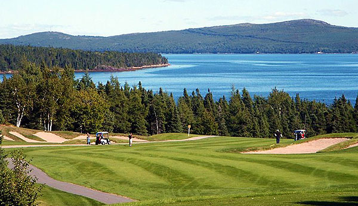
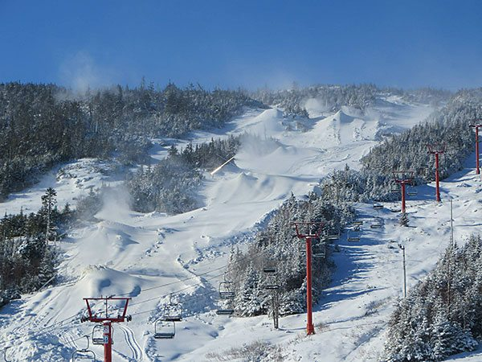

Map of St. John's
Current Weather
St. John's, Newfoundland (and Labrador)
Professional Teams
- None
Recreational Activities
Golf

Terra Nova (Twin Rivers) Golf Resort
Website: Terra Nova (Twin Rivers) Golf Resort
Location: Port Blandford, Newfoundland (2.5hr drive from St. John's)
Clovelly (The Osprey) Golf Club
Website: Clovelly (The Osprey) Golf Club
Location: St. John's, Newfoundland (0.25hr drive from St. John's)
The Wilds Resort at Salmonier River
Website: The Wilds Resort at Salmonier River
Location: Holyrood, Newfoundland (1hr drive from St. John's)
Gander Golf Club
Website: Gander Golf Club
Location: Gander, Newfoundland (3.5hr drive from St. John's)
Website: Terra Nova (Twin Rivers) Golf Resort
Location: Port Blandford, Newfoundland (2.5hr drive from St. John's)
Clovelly (The Osprey) Golf Club
Website: Clovelly (The Osprey) Golf Club
Location: St. John's, Newfoundland (0.25hr drive from St. John's)
The Wilds Resort at Salmonier River
Website: The Wilds Resort at Salmonier River
Location: Holyrood, Newfoundland (1hr drive from St. John's)
Gander Golf Club
Website: Gander Golf Club
Location: Gander, Newfoundland (3.5hr drive from St. John's)
Ski

White Hills Resort
Website: White Hills Resort
Location: Clarenville, Newfoundland (2hr drive from St. John's)
Marble Mountain Resort
Website: Marble Mountain Resort
Location: Steady Brook, Newfoundland (7hr drive from St. John's)
Website: White Hills Resort
Location: Clarenville, Newfoundland (2hr drive from St. John's)
Marble Mountain Resort
Website: Marble Mountain Resort
Location: Steady Brook, Newfoundland (7hr drive from St. John's)